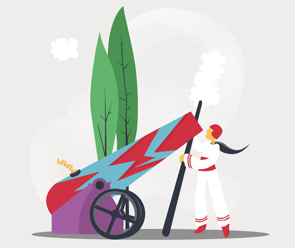

So how important is website maintenance and optimization? You’ve worked diligently with your web design agency over the last several months. Your new strategic business website has been built and is ready to launch for the world to enjoy. But now comes the responsibility of managing your website and ensuring optimal performance. Making certain your website remains updated and finely tuned for daily operation is a priority. And it’s why Isadora Agency created a program called ID Fuel to provide high-level service through ongoing support and optimization to continuously improve website performance.
Keep content fresh
Most websites receive the majority of online traffic from new visitors, not returning visitors. To most of your site’s visitors the content looks and feels brand new. Still, there are areas that visitors expect to change frequently. Blogs, news, webinars, videos, press releases and other social media content must be updated frequently and on a consistent basis to keep from seeming abandoned.
But don’t embark on a content-creating crusade without having a content strategy in place. What specific types of content and visuals will be created and with what frequency? What specific groups within the target audience will receive this content. Or where in the purchase cycle will specific content be most meaningful? How will your brand capture important marketing and even demographic information from visitors through the unique content offered? Also make sure the content on your website is relevant and up-to-date. Combing through the static content on a regular basis to make updates ensures nothing is too old. If you discontinue any products or services, you don’t want any mentions of them leftover throughout the website.
Regularly checking through your site for broken links is also a good habit. Since you have no control over other website changes or even stay up or go down, any link pointing externally is at risk of breaking or no longer providing value. There are tools that can be used to crawl your website and output a report of broken links across your website.
Monitor website performance
Website maintenance and monitoring overall performance is an ongoing job. How can you tell if your website is providing visitors with a strong user experience? Digital strategists consider updating customer facing technology (such as a website) as very important. In addition the customer experience is a top factor CMO’s and marketing leaders consider when evaluating a website. Beyond tallying up the number of page views your website receives, their is a myriad of tools and analytics available to evaluate the true health of a business website. Key performance indicators must be established within your website’s audience, acquisition, behavior and conversion. And it’s equally important to be able to interpret the data in order to decide on the best course of action for improvement. What exactly does that specific visitor interaction tell us? For example, visitors who spend a long time on an interior page might be gaining valuable information, while those who spend too long on a contact form might feel confused or inconvenienced. Maybe you’d like to know where visitors are actually clicking on a page, or spending the most time? Some other high level areas to pay attention to includes:
- Bounce rate – The percentage of visitors who leave your site after viewing only one page. We want to make certain this figure remains low.
- Entrance page – The first page a visitor sees on your site during a session. This may be your home page, if they manually type in your URL, or an interior page, if they are referred (linked) by a different website.
- Exit page – The last page a visitor sees on your site before closing their browser or visiting a different website.
- Device and Browser – Indicates which browser (Internet Explorer, Chrome, Safari, etc.) and device (Apple iPad, Samsung Galaxy, desktop, etc.) a visitor used to view your site.
- Conversion rate – The percentage of visitors who take a desired action, like buying a product, downloading a white paper, or submitting a contact form on your website.
Identify opportunities for improvement
Whether refreshing your home page with new photos, adding new features and functionality to improve the users’ experience, or embarking on an e-mail marketing campaign to attract new customers, there are always improvements that can be achieved to help optimize your website and drive results. These results can come in the form of improved engagement, stronger conversion, an increase in revenue or all of the above. And there are a variety of ways these primary objectives may be achieved.
SEO optimization is another critical area of website maintenance that provides enormous online benefits from consistent updates and improvements. Off-page optimization is an ongoing task and a great way to ensure specific website pages show up higher in search rankings. Your business website is dynamic and should evolve. Business grade websites work best when they benefit from regular website maintenance and optimization. Ongoing monthly support plans offered through ID Fuel are ideal for businesses looking for high-level service and peace of mind from the experts. In addition, ID Fuel may be enhanced so that it’s tailored to your brand’s specific website. With such a program you receive a robust range of ongoing professional solutions (such as search engine optimization, online marketing strategies, social media publishing, graphic design and even back-end development) that immediately address your company’s primary objectives.
